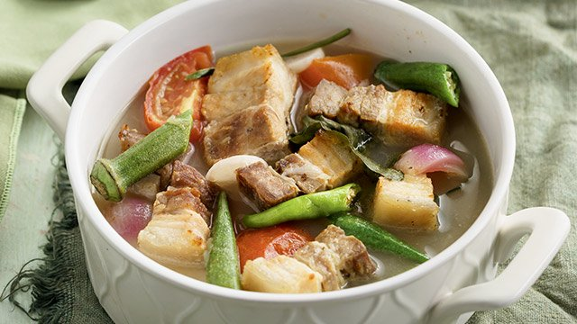

Home
Pork Sinigang

A Classic Filipino Dish
Sinigang comes from the root word “sigang” which means to stew or simmer in a broth, characterized by its sour and savory taste. It is one of the more popular dishes in Filipino cuisine, and like most Filipino dishes, is usually accompanied by rice.
This dish has a few variations and for this recipe, we'll be making the most popular variation which is the Pork Sinigang or locally called Sinigang na baboy. Other proteins and seafood can also be used, such as beef, shrimp, and fish (specifically bangus or milkfish).
Ingredients:
- 8 cups water
- 2 tablespoons fish sauce
- salt and pepper to taste
- 2 pounds pork spare ribs, cut into 2-inch pieces (you may also use other parts such as pork belly with ribs, hocks, knuckles, and tailbone or neck bones, or meatier and leaner pork shoulder)
- packaged tamarind base powder (for a healthier option, you may opt for tamarind fresh pods made into a paste, steps will be provided by the end of the instructions)
- Vegetables
- 2 large tomatoes, quartered
- 1 medium onion, peeled and quartered
- 6 pieces gabi (taro), peeled and halved depending on size
- 2 green chilis
- 1 6-inch labanos (radish), peeled and sliced to half-inch thick half-rounds
- bunch of kangkong (water spinach), ends removed and stalk and leaves seperated
- half bunch sitaw (long beans), ends trimmed and cut into 3-inch lengths
- 6 pieces okra, ends trimmed
Instructions:
- Rinse pork ribs and drain well.
- In a pot over medium heat, combine pork and enough water to cover. Bring to a boil, skimming scum that accumulates on top.
- Once broth clears, add tomatoes, onion, and fish sauce. Lower heat and simmer for about an hour or until meat is tender, adding more water as necessary to maintain about 8 cups.
- Add gabi and kangkong stalks. Cook for about 4 to 6 minutes or until tender.
- Add green chilis and radish. Continue to simmer for about 2 to 3 minutes.
- Add kangkong leaves and cook for another 1 to 2 minutes.
- If using packaged tamarind base powder, add to the pot and stir until completely dissolved. If using tamarind fresh pods made:
- Wash tamarind and place in a saucepan with 1 cup water. Bring to a boil and cook until soft and outer skins begin to burst.
- With a fork, mash tamarinds.
- In a fine-mesh strainer set over a bowl, pour tamarind and liquid. Continue to mash with a fork, returning some of the liquid into the strainer once or twice, to fully extract the juice.
- Discard seeds and skins. Pour tamarind juice into the pot of sinigang.